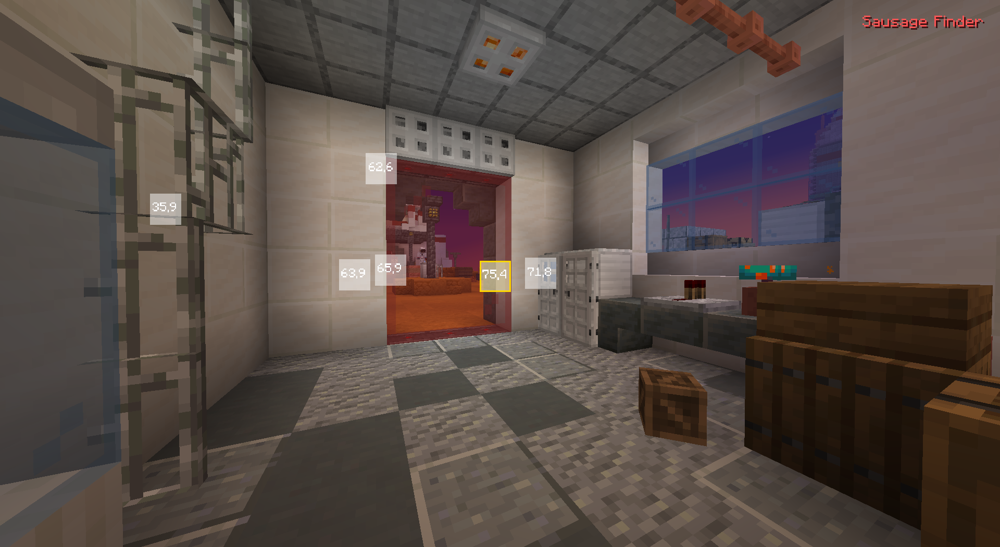
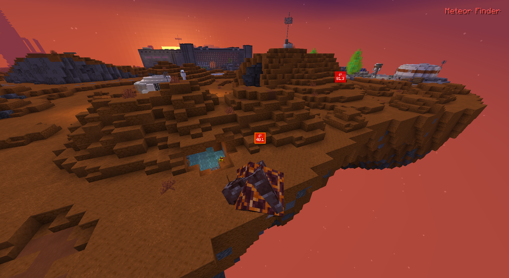
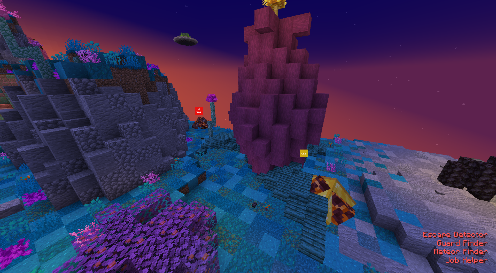
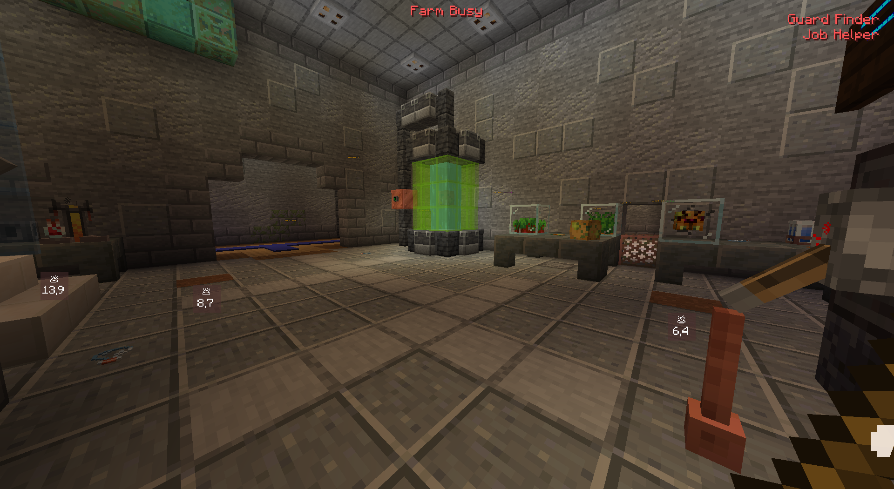
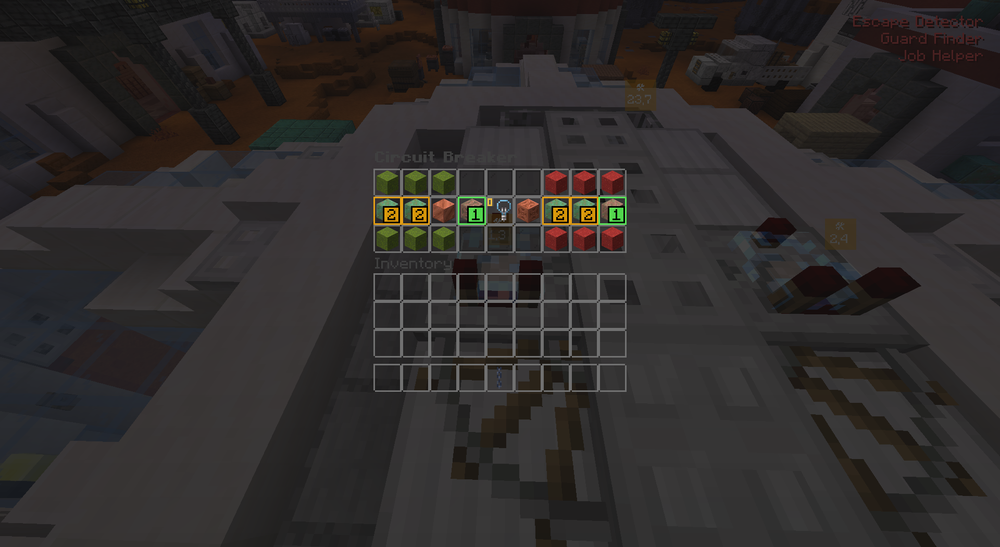
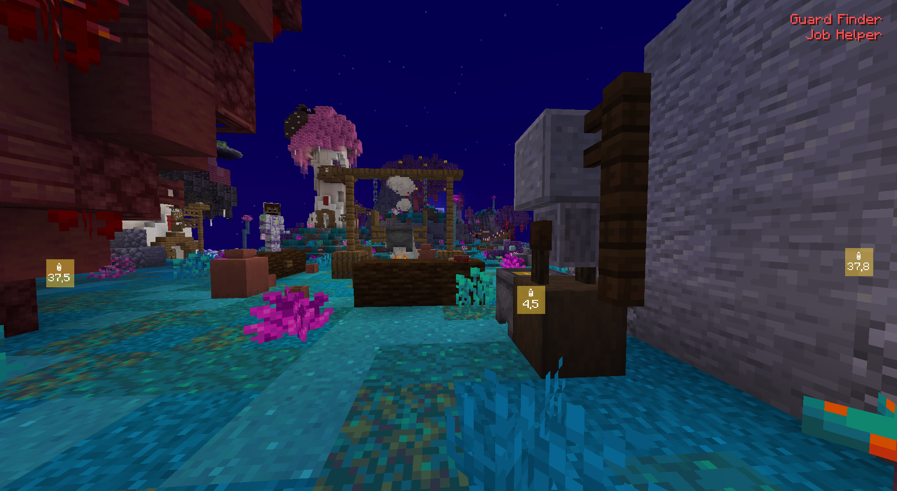
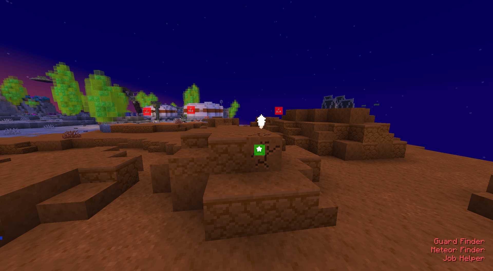
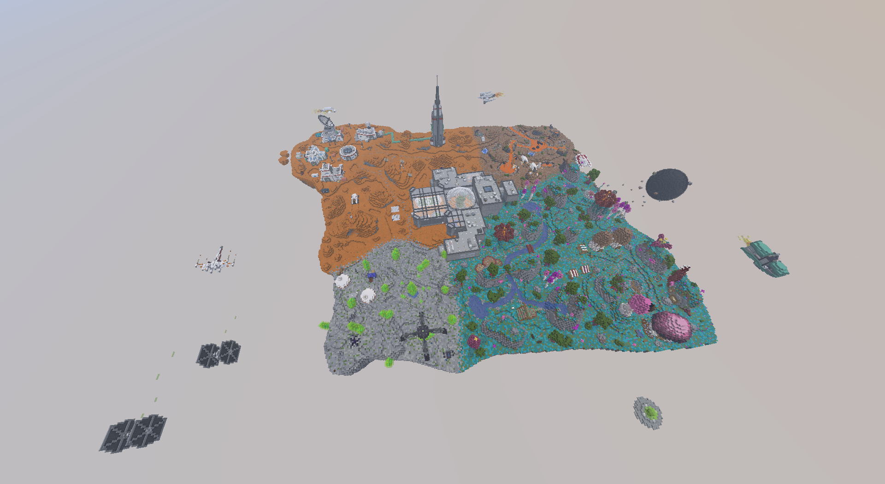
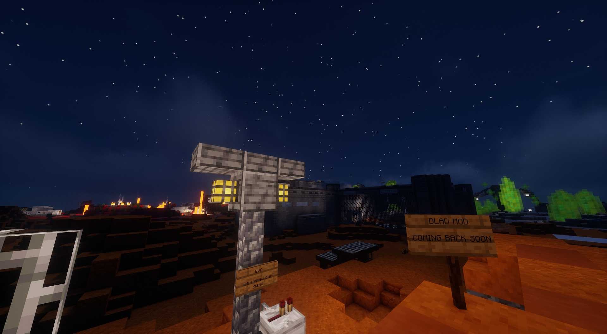

dlad mod
An undetectable "assistance" fabric mod for mlum
Download PageWe strongly recommend checking our FAQ.
Features
Gallery
- Escape detector

- Guard finder

- Sausage finder

- Meteor detector and hover-to-disable controls


- Job helper - mopping, farm status, Mars fixing, turnip bottling, and metal detector




- Mlum world download (available on the Downloads page)

